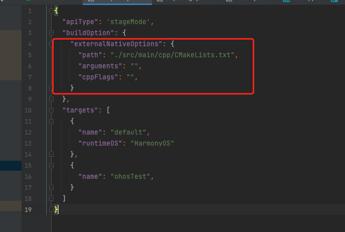

NativeAPI 配置
概述
HarmonyOS的应用必须用js来桥接native。需要使用ace_napi仓中提供的napi接口来处理js交互。napi提供的接口名与三方Node.js一致.通过js调用底层C++API，比如一些逻辑算法可以利用C++封装成so库给上层调用，提高效率的同时，也不容易被反编译。
应用架构
应用架构可以分为三部分：C++、ArkTS、工具链。
- C++：包含各种文件的引用、C++或者C代码、Native项目必需的配置文件等。
- ArkTS：包含界面UI、自身方法、调用引用包的方法等。
- 工具链：包含CMake编译工具在内的系列工具。
使用ArkTS调用C++方法的过程中，需要使用到NAPI、CMake等工具来做中间转换 。
上图中，hello.cpp文件实现C++方法，并通过NAPI将C++方法与ArkTS方法关联。
C++代码通过CMake编译工具编译成动态链接库so文件，使用index.d.ts文件对外提供接口。ArkTS引入so文件后调用其中的接口。

编译架构
C++代码通过CMake编译生成so文件后可以直接被ArkTS侧引入，最终通过hvigor编译成可执行的hap包。

开发流程
第一种方式：使用系统提供模版工程
打开开发工具Deveco，选择File->New->Create Project创建Native C++模板工程。创建后在main目录下会包含cpp目录，可以使用ace_napi仓下提供的napi接口进行开发。
目录结构
cpp c++代码区
CMakeList.txt CMake 的编译配置文件
hello.cpp C++源代码
types 接口存放文件夹
libentry
index.d.ts. 接口文件
oh-package.json5 接口注册配置文件
CMakeList.txt 文件内容 （版本不同，可能内容存在差异，可参考cmakelist文件使用说明）
- cmake_minimum_required(VERSION 3.4.1). 声明CMAKE使用最小版本
- project(MyApplication) 项目名称
- set(NATIVERENDER_ROOT_PATH ${CMAKE_CURRENT_SOURCE_DIR}) 设置了一个名为NATIVERENDER_ROOT_PATH的参数，他的值是当前源码目录
- include_directories(${NATIVERENDER_ROOT_PATH}
${NATIVERENDER_ROOT_PATH}/include) 设置项目使用头文件的路径- add_library(entry SHARED hello.cpp) 将hello.cpp源码封装成名为libentry.so的动态库
- target_link_libraries(entry PUBLIC libace_napi.z.so) 链接使用的三方库
index.d.ts
接口文件index.d.ts用于对外提供方法说明，所有c++编写的函数要提供给上层应用调用，就需要再接口文件中进行描述，如下图所示：有一个add方法，传递两个number参数，并返回number
hello.cpp
Add 自定义函数，提供给上层应用调用
Init Native C++模板生成的结构
- 在napi_property_descriptor desc[]中，我们需要将编写的Add方法与对外提供的接口add接口进行关联，其他参数使用示例默认值填写。
- 使用Native API接口napi_define_properties构建包含方法对应列表的返回值。
demoModule 配置模块描述信息
- nm_register_func = Init 设置Init函数为napi_module的入口方法，类似于main函数
- nm_modname = “entry” 设置napi_module模块名称
attribute((constructor))修饰的方法由系统自动调用，使用Native API接口napi_module_register()传入模块描述信息进行模块注册。
oh-package.json5
将index.d.ts与CMake编译的so文件关联起来
name. 关联so库的名字
types 要与so库关联的index全路径名称
version、description 版本和描述信息
- 生成的so文件要正常使用，需要再使用的模块目录下添加so文件依赖。如下图所示：我需要再entry模块下使用so文件，就需要再entry模块下的oh-package.json5文件添加so文件依赖。如此便可正常使用
build-profile.json5
在使用so库的模块的根目录下的build-profile.json5中，需要添加下面代码，这样才能调用cmakelist，将我们的c++代码打包成so库
1 | "buildOption": { |
使用
模块导入so库以后，就可以像正常文件导入一样进行使用。
- 首先导入so库，import testNapi from ‘libentry.so’
- 然后使用函数，testNapi.add(2, 3)
第二种方式：在原有项目进行添加
很多时候，因为业务变更，原来项目没有napi的需求，现在需要新增napi的需求，这时候不方便重新创建新的项目，只能在原有项目基础上进行新增，那么，我们来试着操作一下吧。
1、在main目录下创建cpp目录
2、在cpp目录下新增以下目录和文件
types 配置文件
lib
index.d.ts
oh-package.json5
include 头文件
define.h
add.h
sub.h
src 源码
main.cpp
add.cpp
sub.cpp
CMakeList.txt 编译配置
以下是各文件详情截图
index.d.ts
oh-package.json5
define.h
add.h
sub.h
main.cpp
add.cpp
sub.cpp
CMakeList.txt
3、修改模块根目录下build-profile.json5 文件

4、修改模块根目录下oh-package.json5 文件
至此，所有的代码和配置就完成了，点击运行查看效果吧。
注意
上面文件中很多地方都有设置名称，需要注意的是，要正确调用c++函数，一定要保证三个地方名称相同，在Cmakelist文件中，要保证add_library 和target_link_libraries 设置的名称相同，生成的so文件会自动在前面加上lib字样，比如在cmakelist中我们设置的名称为east，那么生成的so文件则是libeast.so。在引用模块的oh-package.json5中名称要和生成的so文件一致，如:”@types/libeast.so”: “file:./src/main/cpp/types/libentry”,否则会引起调用无反应的异常情况。